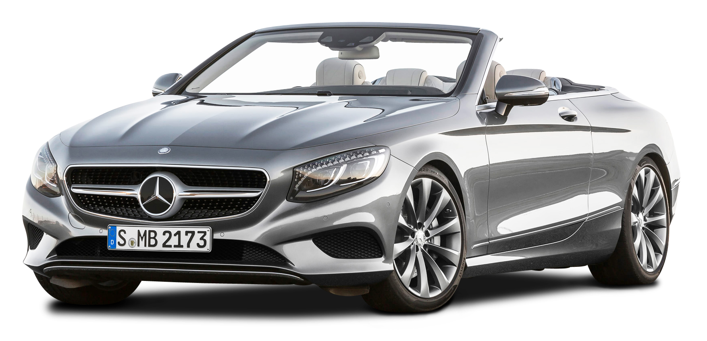
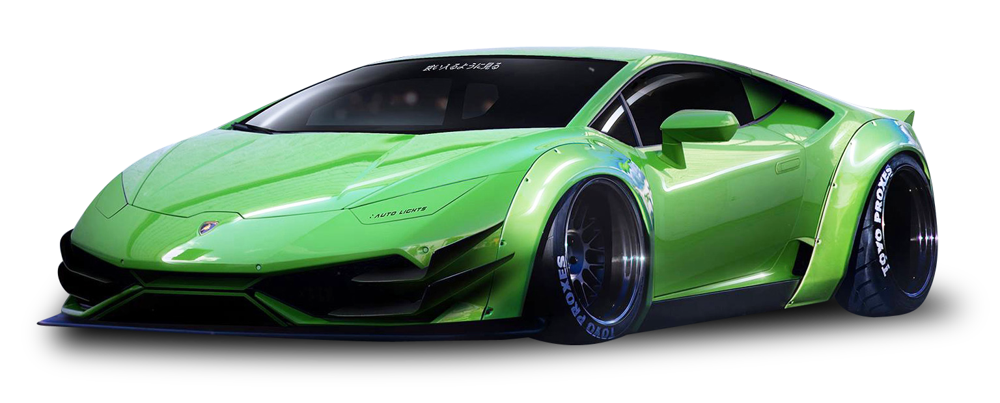
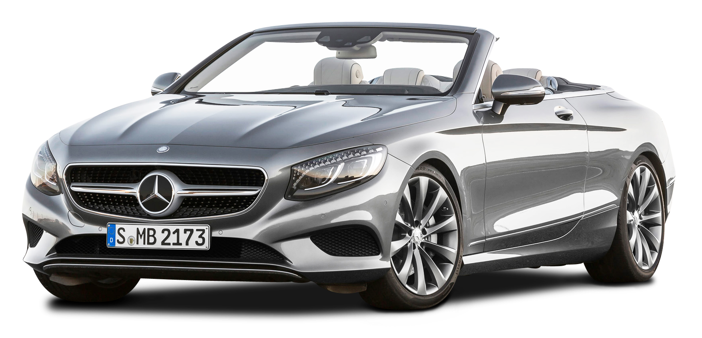
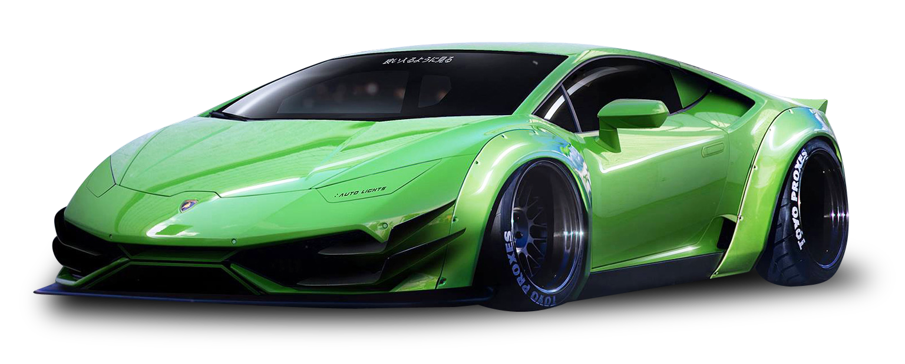

Horse drawn vehicles to modern cars
Horse drawn vehicles to modern cars
Benz Patent Motor Car, the first automobile (1885 – 1886)
The first stationary gasoline engine developed by Carl Benz was a one-cylinder two-stroke unit which ran for the first time on New Year’s Eve 1879. Benz had so much commercial success with this engine that he was able to devote more time to his dream of creating a lightweight car powered by a gasoline engine, in which the chassis and engine formed a single unit.
Using an improved version and without her husband’s knowledge, Benz’s wife Bertha and their two sons Eugen (15) and Richard (14) embarked on the first long-distance journey in automotive history on an August day in 1888. The route included a few detours and took them from Mannheim to Pforzheim, her place of birth. With this journey of 180 kilometers including the return trip Bertha Benz demonstrated the practicality of the motor vehicle to the entire world. Without her daring – and that of her sons – and the decisive stimuli that resulted from it, the subsequent growth of Benz & Cie.
The end of the First World War presented great challenges for the German automotive industry. In the years from 1914 to 1919 hardly any development work had been carried out on civilian products. Economically, the collapse of the currency, the growing number of new automotive companies which had previously operated in the armaments sector, and the loss of important foreign markets had a negative effect.
The end of the First World War presented great challenges for the German automotive industry. In the years from 1914 to 1919 hardly any development work had been carried out on civilian products. Economically, the collapse of the currency, the growing number of new automotive companies which had previously operated in the armaments sector, and the loss of important foreign markets had a negative effect.

 


